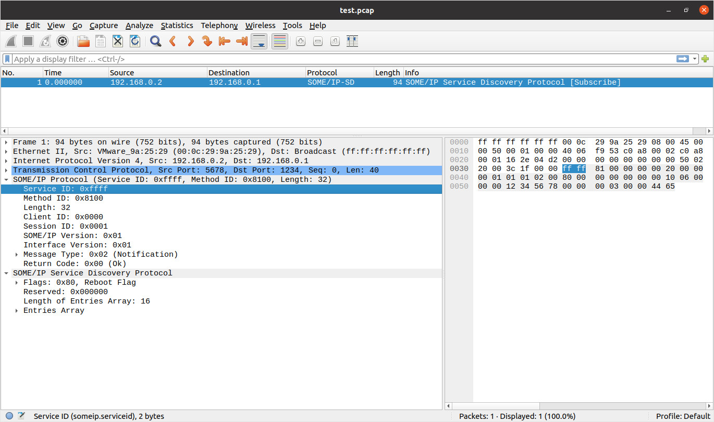

Steward
分享是一種喜悅、更是一種幸福
系統 - AUTOSAR - SOME/IP - 如何使用SCAPY產生TCP PCAP
參考資料：
https://some-ip.com/standards.shtml
https://www.autosar.org/fileadmin/standards/R22-11/FO/AUTOSAR_PRS_SOMEIPProtocol.pdf
https://www.autosar.org/fileadmin/standards/R22-11/CP/AUTOSAR_SWS_SOMEIPTransportProtocol.pdf
https://www.autosar.org/fileadmin/standards/R22-11/FO/AUTOSAR_PRS_SOMEIPServiceDiscoveryProtocol.pdf
main.py
import os
import struct
from scapy.all import *
import scapy.all as scapy
data = bytearray(
b"\xff\xff\x81\x00"
b"\x00\x00\x00\x20"
b"\x00\x00\x00\x01"
b"\x01\x01\x02\x00"
b"\x80\x00\x00\x00" # service discovery
b"\x00\x00\x00\x10"
b"\x06\x00\x00\x00" # entry
b"\x12\x34\x56\x78"
b"\x00\x00\x00\x03"
b"\x00\x00\x44\x65"
)
packet = scapy.Ether() / scapy.IP() / scapy.TCP()
packet[scapy.IP].dst = "192.168.0.1"
packet[scapy.IP].src = "192.168.0.2"
packet[scapy.TCP].dport = 1234
packet[scapy.TCP].sport = 5678
packet[scapy.TCP].flags = 'S'
packet[scapy.TCP].payload = Packet(data)
try:
scapy.wrpcap("test.pcap", packet, append=False)
except Exception as e:
print(f"ERR: {e}")
執行
$ python3 ./main.py $ wireshark test.pcap
